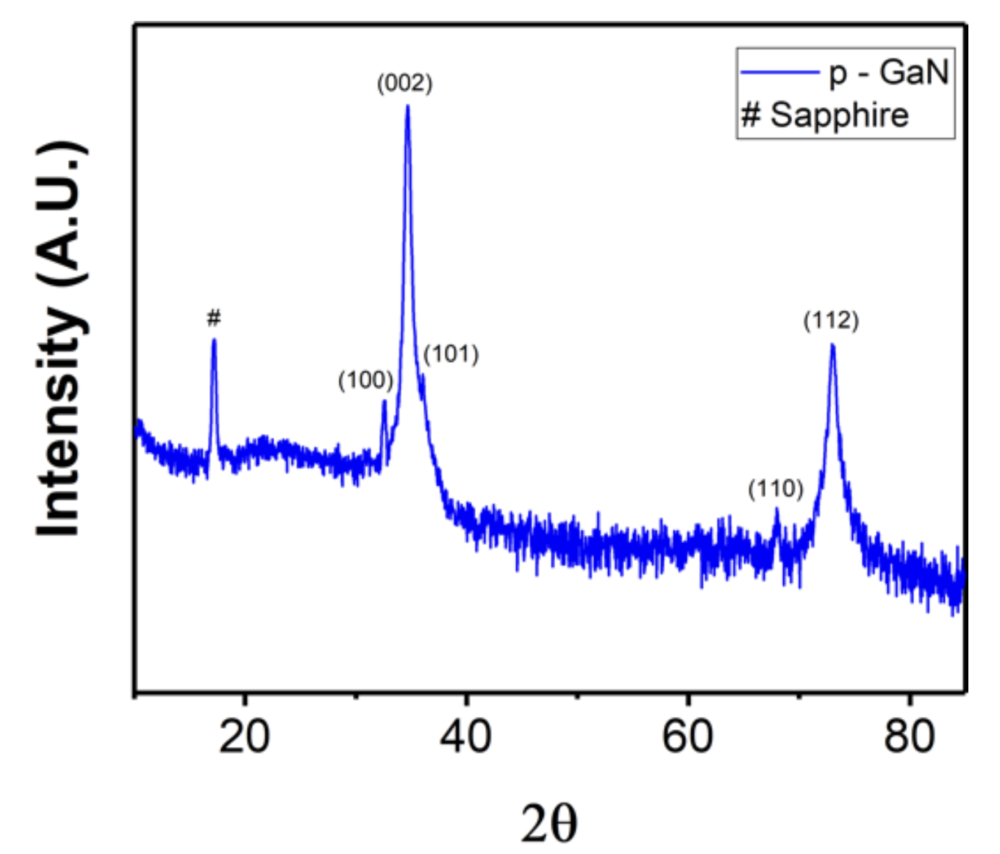
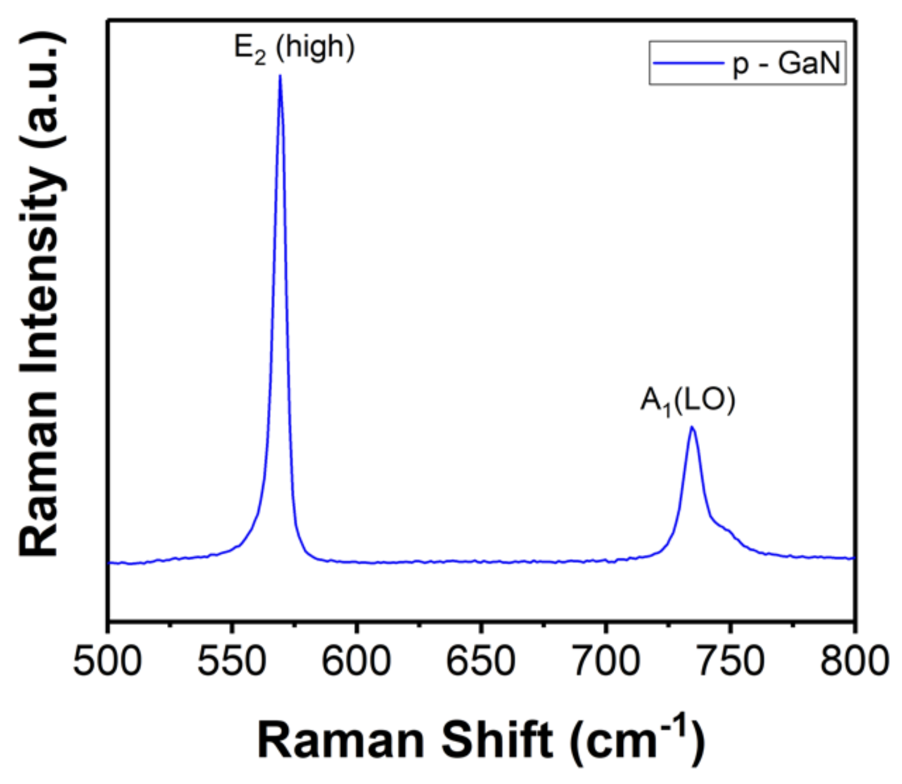
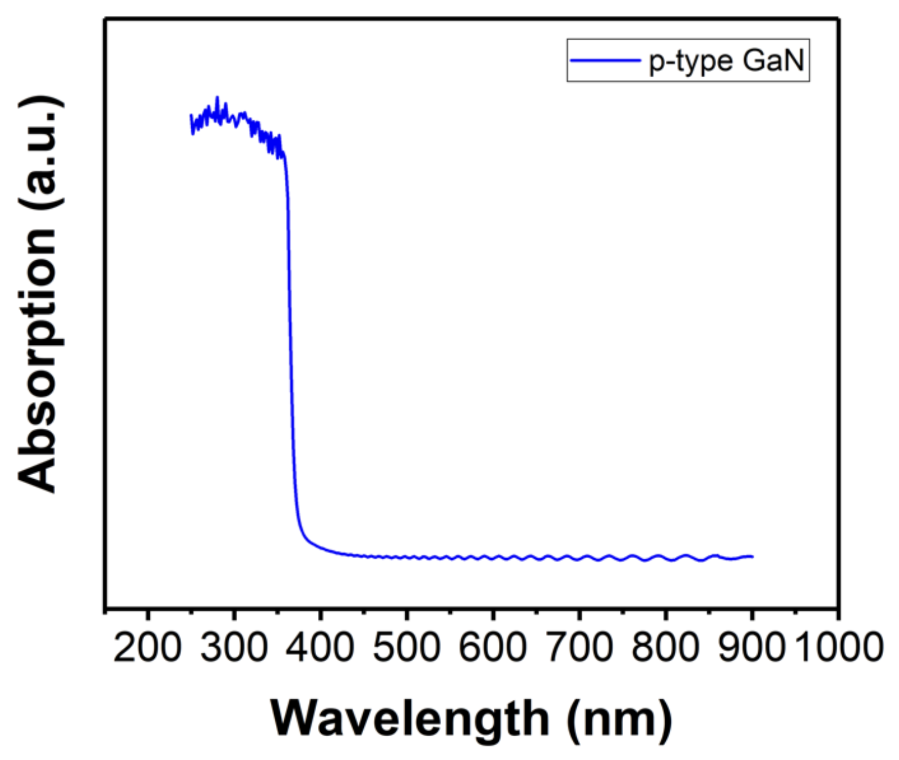
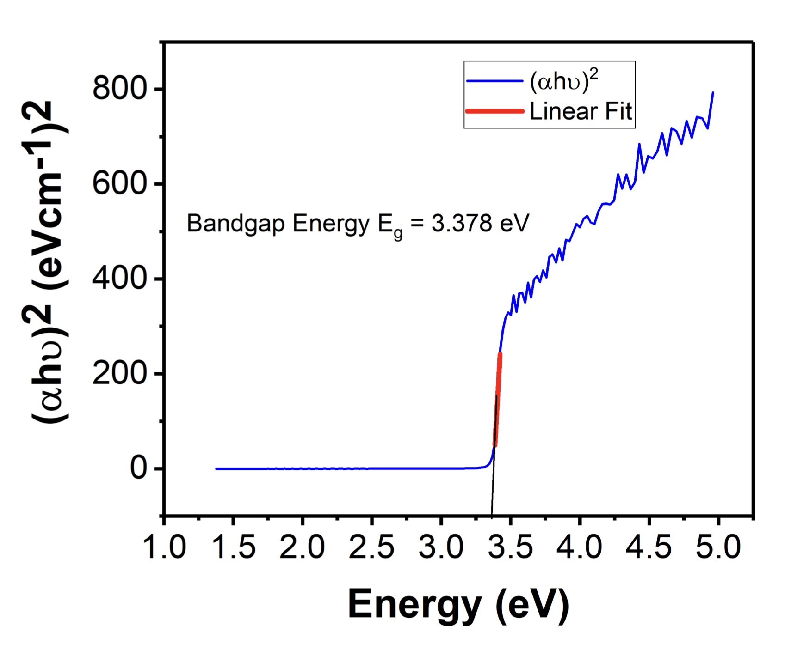

Undergraduate Research / Gallium Nitride
Characterization of Mg-doped p-type gallium nitride
Structural and optical characterization of magnesium-doped p-type gallium nitride, carried out during a summer research internship at IIT Delhi under Professor Rajendra Singh. Gallium nitride is a wide-bandgap III-V semiconductor central to high-power, high-frequency, and optoelectronic devices. Its p-type form is harder to realize than n-type — magnesium acceptors have a high activation energy and the material is intrinsically inclined toward n-type — yet p-type GaN is essential for the p-n junctions underlying LEDs, laser diodes, and transistors. This work characterized an MOCVD-grown p-type GaN film on sapphire using three complementary techniques: X-ray diffraction for structure, Raman spectroscopy for lattice vibrations, and UV-visible spectroscopy for the optical bandgap.
Crystal structure — X-ray diffraction
X-ray diffraction was used to determine the crystallographic structure and quality of the film. The spectrum shows the set of reflections expected for hexagonal wurtzite GaN — the (100), (002), (101), (110), and (112) planes — together with a substrate peak from sapphire. The dominant (002) reflection indicates strong preferred orientation along the c-axis, and the sharp, well-defined peaks point to high crystallinity with few defects, consistent with high-quality epitaxial growth on sapphire.

Lattice vibrations — Raman spectroscopy
Raman spectroscopy probed the vibrational modes of the doped film. The spectrum is dominated by the E2(high) mode near 569 cm−1, characteristic of the wurtzite phonon structure and a marker of good crystalline quality, alongside the A1(LO) mode near 734 cm−1, which reflects the coupling between longitudinal-optical phonons and free carriers. The clean two-mode spectrum is consistent with well-ordered wurtzite GaN.

Optical bandgap — UV-visible spectroscopy
UV-visible spectroscopy characterized the film's optical response. The absorption spectrum shows a sharp edge near 365 nm with strong absorption in the ultraviolet and low, flat absorption across the visible — the signature of a wide direct bandgap and low sub-bandgap defect absorption.

The bandgap was extracted from a Tauc plot, plotting $(\alpha h\nu)^2$ against photon energy and extrapolating the linear region to the energy axis, the standard construction for a direct-gap semiconductor. This gives a bandgap of approximately 3.38 eV, consistent with the accepted value for GaN near 3.4 eV and confirming that the material retains its wide-bandgap character under magnesium doping.

Research internship at IIT Delhi, under Prof. Rajendra Singh, with Dr. Kanika Arora.
References
- X. Cheng, Y. Lin, Y. Zhang, and J. Li, “Review of GaN power devices,” J. Appl. Phys. 130, 160901 (2021).
- S. Musumeci and V. Barba, “Gallium nitride power devices in power electronics applications: state of the art and perspectives,” Energies 16, 3894 (2023).